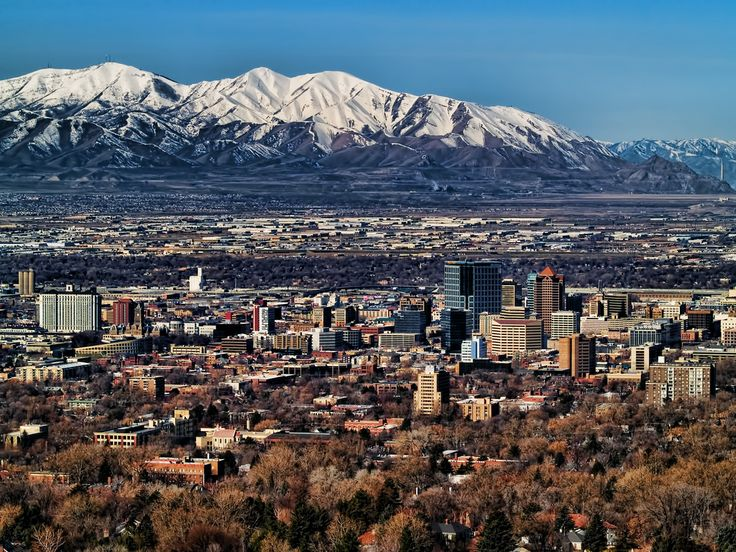

This page covers what I plan to do after college.
“The only way to do great work is to love what you do.” — Steve Jobs
After I graduate, I plan on staying here in Salt Lake City. I’ve really grown to like the area, and I think it has a good mix of opportunities and community. My main goal is to land a job in software development. Ideally something that lets me work with either C++ or Java since those are the languages I’m most comfortable in. I’d prefer something hands-on, where I can really dig into real-world systems and build things that actually matter. Whether that’s working on backend logic, performance optimization, or systems programming, I want to be challenged and continue improving my skills.
Outside of just getting a job, I also want to focus on personal growth and balance. That means continuing to build meaningful relationships, spending more time with the people that matter to me, and learning things that go beyond code. I’m not trying to rush life—just trying to make sure that whatever I do feels intentional. The dream is to do work that feels fulfilling and surround myself with people who make it all feel worth it.
